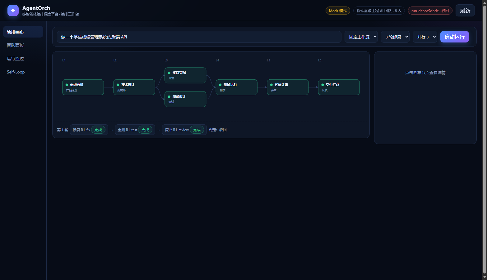
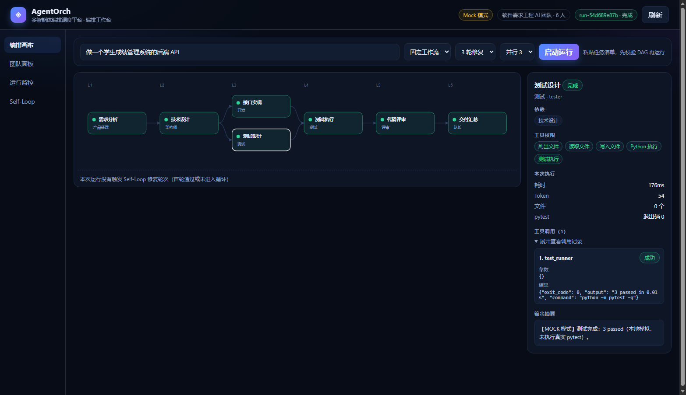
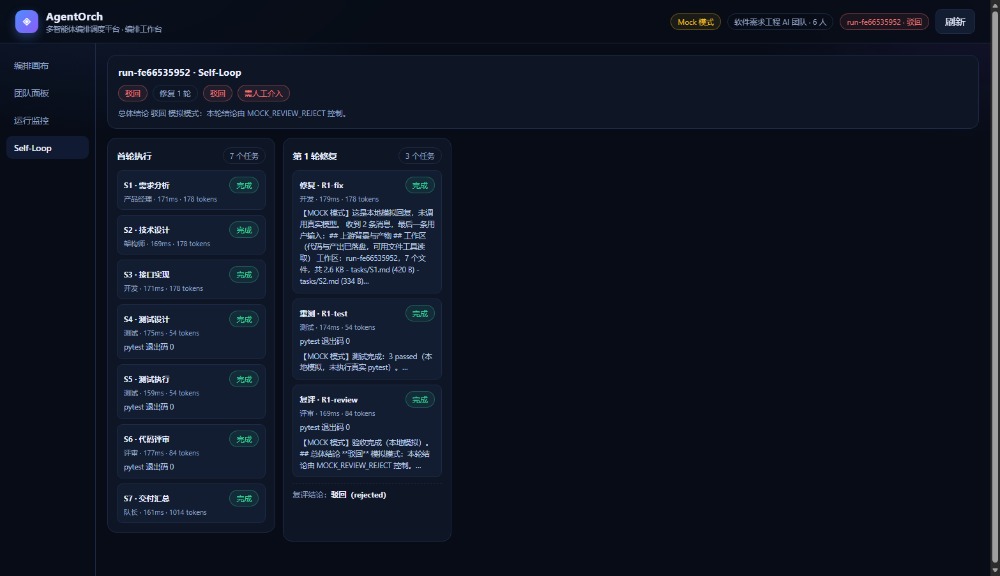
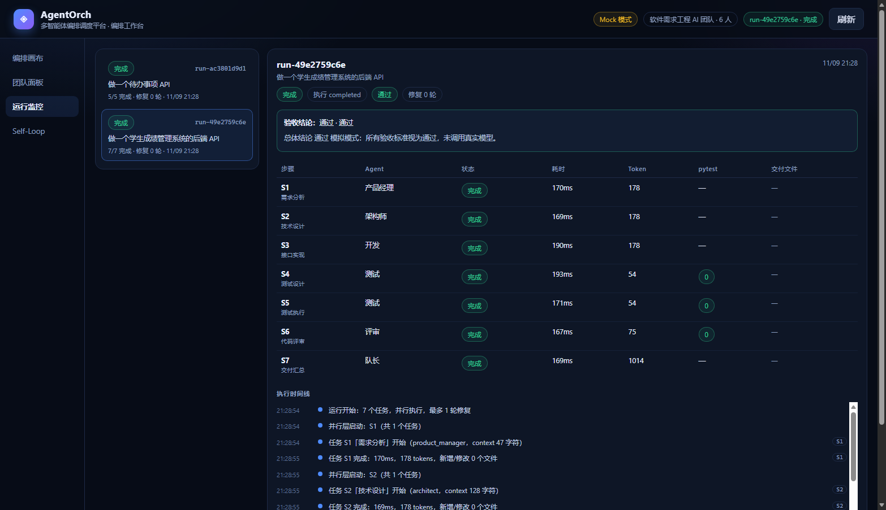
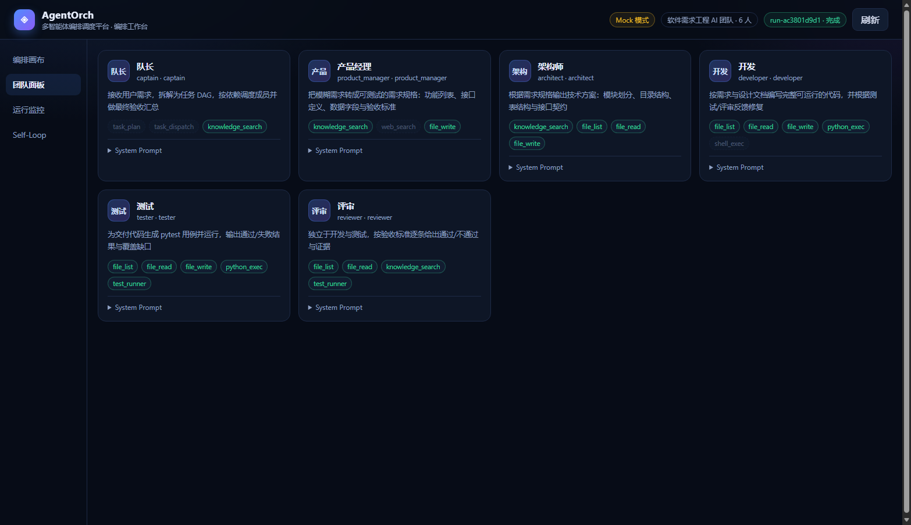

大语言模型已经具备不错的代码生成与文档写作能力，但真实工作从来不是一次问答能完成的。 一个稍具规模的需求，往往要经历需求澄清、方案设计、编码、测试、评审、返工等多个环节， 每个环节需要不同的专业视角、不同的工具权限和不同的验收标准。把全部工作压进一个超长 Prompt，会同时遇到三类问题：上下文被无关信息挤占、中间产物无法追溯、失败后无法定位。
这正是多智能体编排要解决的问题：把复杂任务拆成边界清晰的子任务，让合适的角色在合适的 时机、拿着合适的工具去做，并在每一步留下可检查的证据。赛题一明确要求平台覆盖 Agent 定义、 工作流编排、任务调度、结果验证与反馈优化五个模块，且必须体现多 Agent 协作和至少一种自我 循环机制——这恰好对应我们在工程中遇到的真实缺口。
赛题列举的方向中，「软件需求工程多 Agent 协作」是最适合验证编排能力的场景：它天然包含 串行依赖（需求→设计→实现→测试→评审）、天然包含并行机会（接口实现与测试设计可以同时进行）、 天然包含客观验证（pytest 退出码）与主观验证（评审结论），也天然需要返工循环。相比开放式 写作或搜索类任务，软件交付的每一步都有可观察的产物，便于演示与评分。
我们设定的典型输入是：「做一个学生成绩管理系统的后端 API」。系统需要自动产出需求规格、 技术设计、可运行的接口代码、pytest 用例、测试报告与验收记录。传统做法中，这些工作由不同 岗位接力完成，沟通成本高、文档与代码容易不一致、测试证据经常缺失；而单 Agent 一次性生成 又无法保证完整性与可验证性。
| 痛点 | 具体表现 | 平台对应设计 |
|---|---|---|
| 需求模糊 | 用户只给一句话，功能边界、验收标准都不清楚 | 产品经理 Agent 输出功能列表、接口契约与可测试的验收标准 |
| 上下文丢失 | 上游产出几万字，塞进下游 Prompt 会被截断 | 产物落盘，下游只拿清单，通过 file_read 按需读取 |
| 执行不可见 | 不知道当前跑到哪一步、哪个 Agent 在做什么 | 任务状态机 + 执行日志 + Web 工作台时间线 |
| 执行≠验收 | 任务跑完就当作成功，没人核对质量 | 执行状态与验收结论双维度，评审 Agent 独立验收 |
| 失败即终止 | 测试挂了就结束，没有修复机会 | Self-Loop：修复→重测→复评，最多 3 轮 |
| 不可复现 | 评审专家没有 API Key 就无法体验 | 完整 Mock 模式，离线可跑通全链路 |
据此，平台设定五个设计目标：
当前版本聚焦「单机、单模型、单进程」的最小闭环：持久化使用内存，尚未接入 SQLite/PostgreSQL； RAG 只实现了工作区关键字检索，未接入 Chroma 向量库；MCP 协议尚未接入；多机调度与 attempt_id 原子认领属于下一阶段。方案书后续章节会明确区分「已实现」与「规划中」， 不把设计目标写成既成事实。
平台采用前后端分离的分层架构，后端按职责拆为 API 层、编排层、Agent 层、模型层与工作区层， 前端是一个由 FastAPI 直接托管的零构建单页应用。整体数据流如下：
用户需求 │ ▼ [编排入口] 固定工作流 WorkflowStep ／ 队长自动拆解 ／ JSON 任务清单 │ ▼ [依赖校验] 唯一 id、负责人存在、依赖存在、无自依赖、无重复、Kahn 拓扑查环 │ ▼ [分层调度] 拓扑分层 → 同层 asyncio.gather 并行（信号量限流）→ 层间屏障 │ ▼ [Agent 执行] system prompt + 任务描述 + 工作区清单 → DeepSeek API │ │ │ ├─ file_read / file_write / file_list │ ├─ test_runner（pytest）/ python_exec │ └─ 工具调用留痕 + 测试退出码 ▼ [运行工作区] app/ tests/ artifacts/ tasks/（每个 run 独立目录） │ ▼ [结果验证] 评审 Agent 验收 + 自动化测试门 → 执行/验收双状态 │ ├─ 通过 → completed └─ 驳回/测试失败 → Self-Loop（修复→重测→复评，最多 3 轮）→ 超限 needs_human
| 层级 | 选型 | 理由与取舍 |
|---|---|---|
| 后端框架 | Python 3.14 + FastAPI | 原生 async、Pydantic 校验、WebSocket/SSE 支持好，适合编排类 IO 密集服务 |
| 数据模型 | Pydantic v2 | 请求、任务、运行状态共用一套模型，序列化与校验成本低 |
| 大模型 | DeepSeek API（OpenAI 兼容） | 中文与代码能力强、价格低；OpenAI SDK 兼容，便于将来切换多模型 |
| 并发模型 | asyncio + Semaphore | 层内并发、层间屏障，单进程即可演示，不引入 Celery/Redis |
| 持久化 | 内存 RunStore | 当前阶段优先跑通状态机；重启即丢是明确取舍，后续替换 SQLite |
| 前端 | 原生 HTML/CSS/JS + SVG | 零构建、无 npm 依赖，评审专家打开即可用；DAG 用 SVG 自绘 |
| 测试 | pytest + TestClient | 全部核心路径有确定性单测，Mock 模式不消耗模型额度 |
| 工具协议 | Function Calling | 使用 OpenAI 兼容 tools 协议；对网关偶发的 DSML 文本调用做兜底解析 |
任务「跑完」不代表「做对」。平台把 execution_status（调度器视角：有没有异常）
与 acceptance.status（评审视角：内容合不合格）分开存储，再由二者汇总出运行状态。
这样即使所有任务都 completed，只要评审驳回，运行状态仍是 rejected，不会被「完成」掩盖。
开发产出的代码动辄上万字，直接拼进下游 Prompt 会被截断，也会造成 token 浪费。平台为每个 run
建立独立工作区，Agent 通过 file_write 写文件、通过 file_read 按需读取；
下游任务只收到「工作区文件清单 + 上游任务指针」。实测下游 context 长度从几万字符降到
47–480 字符，同时保留了完整代码。
6 个角色各是一个 Python 类，system prompt 作为类属性，可 diff、可 review。每个角色写死
allowed_tools，在类加载时检查工具是否注册、prompt 是否为空、温度是否合法，
写错直接启动失败，避免带病运行。
没有 API Key 时，队长返回可解析的任务 DAG，评审返回带「总体结论」的验收记录，测试返回
一次假的 test_runner 调用。整套执行、验收、工具留痕链路都能离线跑通，
方便评审复现与前端联调。
团队采用「队长制」：一个队长负责任务拆解、调度与最终交付，五个成员各司其职。角色固定写死， 不做动态注册；团队 JSON 只决定「用哪些角色、成员 id 叫什么」。
| 角色 | 职责与输出 | 工具权限 |
|---|---|---|
| 队长 Captain | 澄清需求、拆任务 DAG、按依赖调度、汇总交付；不写业务代码 | task_plan、task_dispatch、knowledge_search |
| 产品经理 | 功能列表、用户故事、接口定义、数据字段、可测试的验收标准 | knowledge_search、web_search*、file_write |
| 架构师 | 技术选型、模块划分、目录结构、表结构、接口契约、风险取舍 | knowledge_search、file_list、file_read、file_write |
| 开发 | 按设计写完整代码，按失败日志修复，写回工作区 | file_list、file_read、file_write、python_exec、shell_exec* |
| 测试 | 编写 pytest 用例、执行测试、输出通过/失败与覆盖缺口 | file_list、file_read、file_write、python_exec、test_runner |
| 评审 | 独立验收，逐条给 passed/failed 与证据，输出总体结论 | file_list、file_read、knowledge_search、test_runner |
* 带星号的 web_search、shell_exec 目前在注册表中标记为未实现（implemented=false），不会暴露给模型伪装可用。
每套 prompt 都按「角色定位 → 职责 → 输出格式 → 约束」四段组织。例如评审 Agent 强制要求 输出一张验收记录表（标准编号、结论、证据、问题与建议、严重级别），并规定「证据不足视为 failed」「测试未覆盖的 P0 视为 failed」「只评审不改代码」。这样后续的验收解析器才能稳定 提取「总体结论」，把自然语言变成结构化状态。
为控制成本，prompt 还加入工具预算：测试 Agent 最多读 5 个文件、只运行一次 pytest； 评审最多读 8 个文件、最多运行一次 pytest；开发最多读 8 个文件。这直接针对演示中 「单次运行 token 过高」的问题。
{
"id": "software_team",
"name": "软件需求工程 AI 团队",
"captain": "captain",
"members": [
{ "id": "captain", "role": "captain" },
{ "id": "product_manager", "role": "product_manager" },
{ "id": "architect", "role": "architect" },
{ "id": "developer", "role": "developer" },
{ "id": "tester", "role": "tester" },
{ "id": "reviewer", "role": "reviewer" }
]
}
启动时装配并校验：成员 id 唯一、角色必须存在、队长必须在成员列表中且角色为 captain。 配置错误直接启动失败，而不是运行到一半才报错。
固定工作流的核心结构只有三个字段：步骤名、负责 Agent、依赖的步骤名。
class WorkflowStep(BaseModel):
step_name: str
agent: str
depends_on: list[str] = []
内置「软件需求工程」模板共 7 步、6 层：
| 层 | 步骤 | Agent | 依赖 |
|---|---|---|---|
| L1 | 需求分析 | product_manager | — |
| L2 | 技术设计 | architect | 需求分析 |
| L3 | 接口实现 | developer | 技术设计 |
| L3 | 测试设计 | tester | 技术设计 |
| L4 | 测试执行 | tester | 接口实现、测试设计 |
| L5 | 代码评审 | reviewer | 测试执行 |
| L6 | 交付汇总 | captain | 代码评审 |
L3 的「接口实现」与「测试设计」互不依赖，是并行的关键演示点：测试设计不必等代码写完， 两人同时开工，L4 再汇合。
| 入口 | 流程 | 适用场景 |
|---|---|---|
| 固定工作流 | 模板步骤 → 任务清单 → 校验 → 分层并行 | 标准流程、可重复演示 |
| 队长拆解 | goal → 队长输出 JSON DAG → 解析 → 校验 → 执行 | 开放需求、动态编排 |
| JSON 清单 | 手写任务 JSON → /runs/validate 校验 → 执行 | 自定义 DAG、演示失败与边界 |
队长拆解的输出被要求为「说明 + JSON 代码块」，解析器同时兼容围栏与非围栏两种写法；
解析失败返回 422，不会创建空 run。JSON 清单入口则直接复用同一套校验接口，前端把
task_cycle、task_unknown_owner 等错误码翻译成中文提示。
任务清单在进入调度前要做六类检查：
校验通过后返回拓扑序，并按「入度为 0 的节点同时入层」切分。层内节点互不依赖，
可以并发；层与层之间是屏障，必须等上一层全部结束。执行时用
asyncio.Semaphore(max_parallel) 限流，默认 3。
async def execute_layers(run, team, workspace, max_parallel=3):
semaphore = asyncio.Semaphore(max_parallel)
while pending := [t for t in run.tasks if t.status == "pending"]:
ready = [t for t in pending if all(dep.status == "completed"
for dep in deps_of(t))]
async def run_one(task):
async with semaphore:
await execute_task(task)
await asyncio.gather(*(run_one(t) for t in ready))
下游任务的 context 由两部分组成：工作区清单（文件名、大小）和上游任务指针
（tasks/<id>.md）。Agent 需要细节时调用 file_list 选择文件、
file_read 读取。开发写代码用 file_write，测试写用例后调用
test_runner 执行 pytest，结果（退出码、输出）回写任务状态。
工具调用全部留痕：工具名、参数摘要、结果摘要、成功/失败。前端 inspector 可折叠查看，
调度层则从中提取 test_runner 的退出码作为测试门依据。
| 状态 | 含义 | 进入条件 |
|---|---|---|
| pending | 待执行 | 任务创建后初始状态 |
| running | 执行中 | 依赖全部完成，被调度器派发 |
| completed | 执行完成 | Agent 调用成功并落盘产物 |
| failed | 执行失败 | 模型调用异常、工具异常或返回错误 |
| skipped | 跳过 | 任一上游 failed/skipped，下游不再执行 |
运行层另有 pending / running / completed / failed / rejected / needs_revision
六个状态。其中 rejected 表示「执行完成但验收未通过」，needs_revision 表示「有评审任务但
没解析出结论」——后者绝不能算成功。
调度器不轮询消息队列，而是在每个执行波次扫描 pending 任务：依赖全部 completed 的进入
就绪集合；任一依赖 failed/skipped 的立即标记 skipped。就绪任务通过
asyncio.gather 并发执行，信号量限制并发度。这样既保证了依赖顺序，又充分利用
了并行机会。失败只影响下游，无关分支继续执行，避免一个任务拖垮整张图。
实测：固定工作流 7 个任务，L3 的 S3（接口实现）用时 20.6s、S4（测试设计）用时 46.2s，
两者同时启动，该层总耗时取最大值 47s 而不是相加的 67s；全链路 154s。队长拆解与 JSON 清单
同样走并行调度（/runs 现在显式传 parallel=True 与 max_parallel），
不再只有模板路径支持并行。
平台有两条独立的触发线：
test_runner 后 pytest 退出码非 0。
即使评审 Agent 给了「通过」，测试门也会把验收结论强制改为 rejected，防止
「评审放水」。
如果存在评审任务、却没有解析出「总体结论」，系统判为 needs_revision，
直接转人工，不进入循环，也绝不算 completed。这是针对真实模型偶尔漏写小标题而加的
验收缺失探针。
首轮执行 → 测试/评审失败 ↓ R1-fix 开发：读失败测试日志 + 评审记录，修复代码 ↓ R1-test 测试：重新运行 pytest，退出码写回状态 ↓ R1-review 评审：重新验收 ↓ 通过 → completed；仍失败 → 第 2 轮 …… 最多 3 轮 ↓ 轮次用尽 → rejected + needs_human=true
修复任务的 goal 里直接拼接失败测试日志（末尾 3000 字）和评审结论，开发不用猜；
重测任务必须调用 test_runner；复评通过且测试退出码为 0 才收口。
循环带有三层终止条件：
每个 run 在内存中维护 logs 列表，记录运行开始、任务开始/完成/失败/跳过、
并行层启动、Self-Loop 轮次、验收结论、运行结束。日志带时间、级别、task_id，可通过
GET /api/v1/runs/{run_id}/logs 查询；任务侧还有 tool_calls
工具留痕与 test_result 测试退出码。前端把日志渲染成时间线，把修复轮渲染成
独立卡片。
这是平台最核心的工程判断。调度器只回答「任务有没有跑完」，评审与测试才回答「交付合不合格」。 两个维度分开建模后，运行状态由它们共同推导：
| execution_status | acceptance.status | 最终 status |
|---|---|---|
| completed | passed | completed |
| completed | rejected | rejected |
| completed | needs_revision | needs_revision（转人工） |
| failed | 任意 | failed |
评审 Agent 的输出不是自由文本，而是固定结构的验收记录：每条验收标准一行，包含 passed/failed、证据（文件路径+行号、测试用例编号、命令输出摘要）、修复建议与 P0/P1/P2 严重级别，最后给出「通过 / 有条件通过 / 驳回」的总体结论。解析器只提取总体结论与 阻断项，避免把整篇评审塞进状态字段。
阻断项提取做了清洗：只保留「阻断项清单」里的条目，过滤「复现：」「修复：」这类续行与 表格分隔线；评审通过时 blockers 强制为空，避免把「无 P0 遗留」误当成阻断项。
第一轨是自动化测试：测试 Agent 用 test_runner 执行 pytest，退出码与输出
进入任务状态；第二轨是评审验收：评审 Agent 独立读代码、读测试报告，逐条核对验收标准。
两轨都通过才算交付通过。测试门的设计保证「评审说通过但 pytest 失败」不会蒙混过关。
验收失败不是终点，而是下一轮的输入：失败测试日志、评审结论、阻断项被拼进修复任务； 开发修复后由测试重跑、评审复评。这样形成 Plan-Do-Check-Act 的闭环： 需求与设计是 Plan，编码是 Do，测试与评审是 Check，修复是 Act。
当前版本的反馈只作用于「本轮修复」，尚未实现跨任务的长期经验沉淀（例如把成功修复 策略写成 Skill 供下次复用），这是下一阶段的优化方向。
| 模块 | 职责 |
|---|---|
app/agents/roles/ | 6 个角色类，prompt 与工具权限 |
app/agents/base.py | BaseAgent：拼 prompt、调模型、工具循环、结果封装 |
app/llm/client.py | DeepSeek 客户端：普通调用、流式、function calling、错误归一化 |
app/orchestration/workflow.py | WorkflowStep、固定模板、拓扑分层、任务构建 |
app/orchestration/scheduler.py | DAG 校验、分层并行、失败传播、测试门、Self-Loop 控制 |
app/orchestration/workspace.py | 运行工作区：落盘、清单、文件/测试/代码执行工具 |
app/orchestration/acceptance.py | 评审结论解析、测试门、验收缺失探针 |
app/orchestration/self_loop.py | 生成修复/重测/复评任务 |
app/api/v1/ | agents / runs / workflows / chat 四组接口 |
app/web/index.html | 零构建编排工作台（DAG、团队、时间线、Self-Loop） |
def apply_test_gate(run):
result = latest_test_result(run)
if result is None or result.exit_code == 0:
return
run.acceptance = AcceptanceState(
status=AcceptanceStatus.rejected,
verdict="测试未通过",
summary=f"自动化测试门未通过（pytest 退出码 {result.exit_code}）...",
)
if status is AcceptanceStatus.pending:
# 有评审任务却没有「总体结论」：信息不足，绝不能算通过
status = AcceptanceStatus.needs_revision
summary = "评审未给出「总体结论」，无法判定验收结果。"





| 方法 | 路径 | 说明 |
|---|---|---|
| POST | /api/v1/workflows/{id}/runs | 按固定模板运行（分层并行） |
| POST | /api/v1/runs | 队长拆解或 JSON 清单运行（并行） |
| POST | /api/v1/runs/validate | 只做 DAG 校验，返回拓扑序 |
| GET | /api/v1/runs/{id} | 运行详情（任务、验收、日志） |
| GET | /api/v1/runs/{id}/logs | 执行日志 |
| GET | /api/v1/runs/{id}/file | 读取工作区文件（防路径穿越） |
| GET | /api/v1/team | 团队与角色配置 |
后端共有 84 个 pytest 用例，默认注入 LLM_MOCK=true，不消耗真实模型额度。
覆盖范围如下：
| 测试文件 | 覆盖点 |
|---|---|
| test_system / test_chat | 健康检查、模型列表、普通对话、SSE 流式、参数校验 |
| test_agents | 6 个角色、团队配置校验、工具权限、单 Agent 试跑 |
| test_scheduler | 6 类 DAG 校验、顺序执行、失败传播、日志、并行派发、文件接口 |
| test_workflow | 模板分层、任务映射、工作流运行、并行耗时、文件归属 |
| test_self_loop | 驳回修复、测试门、测试失败触发、轮次耗尽、无结论转人工、工具留痕 |
| test_workspace | 落盘、清单、路径穿越、代码块提取、pytest、python_exec、检索 |
| test_acceptance / test_dsml / test_planner | 验收解析、DSML 兜底、任务 JSON 解析 |
| 场景 | 结果 |
|---|---|
| 固定工作流（7 任务） | 全链路 154s；L3 两个任务并行，层耗时 47s（串行需 67s）；评审「有条件通过」 |
| 真机强制失败 | 评审首轮驳回（缺测试/文档，pytest 退出码 5）→ 自动追加 R1-fix/R1-test/R1-review → 修复后 pytest 退出码 0 → 复评通过，84s，rounds=1 |
| 删除结论的评审 | 验收状态 needs_revision、needs_human=true，不进入 completed |
| 并行调度 | 两个独立 mock 任务 0.20s 完成，日志出现「并行层启动：A、B」 |
| 上下文长度 | 下游任务 context 47–480 字符；工作区落盘 14 个真实文件 |
单次 7 任务真实演示约 3 分钟、33.5 万 token，瓶颈在测试 Agent 反复读文件与重复执行 pytest。 优化措施：测试 prompt 限制「最多读 5 个文件、pytest 只跑 1 次」，评审最多读 8 个文件， 开发最多读 8 个文件；工作流默认并行度从 2 提升到 3。优化后的具体数值需要在下次完整 演示中复测，方案书不虚报未测数据。
接口层性能：健康检查约 5ms，运行详情约 10ms，SSE 首字节主要受模型影响；前端轮询只在 运行中启用（1.2s 一次），终态自动停止，避免空转。
大模型是整个平台的推理核心，但每个角色只负责自己的一段工作：产品经理把模糊需求转成
可测试的规格；架构师把规格转成技术方案；开发按方案写代码；测试写用例并执行；评审做
证据化验收；队长拆解任务并汇总。模型调用统一走 DeepSeekClient，
支持普通调用、SSE 流式、JSON 模式与 function calling，错误统一归一化为业务错误码。
工具调用采用 OpenAI 兼容的 tools 协议。真实网关偶尔会把工具调用写成 DSML 文本
（<｜｜DSML｜｜ invoke ...>），平台增加了兜底解析器，把文本还原成
工具调用继续执行，避免工具静默丢失。
本版本没有接入 Chroma 或向量数据库；knowledge_search 是对工作区文本文件的
关键字检索，返回命中路径与片段，属于轻量知识检索，不是严格意义上的 RAG。MCP 协议也
尚未接入，工具通过进程内注册表与 function calling 暴露。方案书明确区分「已实现」与
「规划中」，避免把设计目标写成既成事实。
项目代码、测试与文档在 AI 编程助手辅助下完成：由助手生成初稿、执行测试、跑通真实链路， 团队成员负责需求判断、架构取舍与结果验收。所有对外声称的能力都以实际运行的接口、 测试结果和截图为准；未验证的设计在文中标注为规划。
| 风险 | 控制手段 |
|---|---|
| 模型幻觉 / 编造文件 | 产物必须落盘，评审用 file_read 读真实文件；证据不足判 failed |
| 评审漏写结论 | 验收缺失探针 → needs_revision，绝不静默通过 |
| 评审放水 | 自动化测试门：pytest 非 0 强制 rejected |
| token 成本失控 | 工具预算、并行度、轮次上限、任务数上限、无进展检测 |
| 代码执行安全 | 工作区路径沙箱、超时、禁止 shell_exec、文件大小限制 |
| 结果不可复现 | Mock 模式 + 确定性单测 + 运行日志与工具留痕 |
附：本方案书对应代码仓库中的 README、docs/verification.md 与 FastAPI 在线文档， 所有截图来自实际运行的系统。方案书正文约 6000 字（不含图表与代码）。